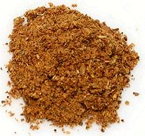

 |
Zanzibar Curry PowderZanzabar (Tanzania) - poda ya curry (Swahili) | ||||
| Makes: Effort: Sched: DoAhead: |
6 T ** 15 min Yes |
This Curry Powder is named for the Islands of Zanzibar, formerly a center of the spice trade. It is used in Tanzania, of which Zanzibar is part. This recipe fills 2/3 of a 4 oz spice jar. | |||
|
----- 1 1/2 1 1/2 2/3 ----- 1 2/3 1/2 1/2 |
--- T T T T t --- in t T T |
-- Toasted Cumin Seeds Coriander Seeds Mustard Seeds (1) Fennel Seeds Fenugreek Seeds --------- Cinnamon Turmeric Chili Powder (2) Paprika |
Make: - (15 min)
|